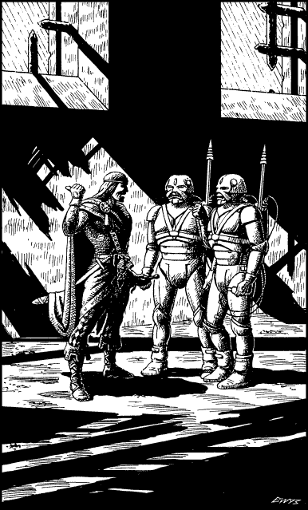

324
You enter the building at ground level and follow your adversary’s tracks to a mouldering hall at the rear of this derelict dwelling. From the cover of a shadowy alcove you watch as Wolf’s Bane meets and converses with two warriors. They are both helmeted and clad in suits of close-fitting grey armour. They have shiny steel spears slung over their shoulders which radiate a faint hum of electrical power. Their meeting is brief. Wolf’s Bane issues terse commands and the two warriors leave to enact his orders. As you watch them go, you hazard a guess that their mission is to find and kill you.

Wolf’s Bane leaves the hall by a broken rear door. You wait for a few minutes, to reduce the risk that he may detect how near you are, and then you follow his trail. The rear of the building opens onto a wasteland of shattered rubble which is bisected by a dead stream of salty, acidic water. You follow your opponent’s trail across this bleak and forbidding landscape, past sharp spires of crimson and jet that erupt through the dereliction to scratch the cloudy sky. Rust-red water encircles their bases, lending them a wholly sinister aspect. To your eyes it seems as if this blighted city has been impaled upon these cruel, towering spikes.
Beyond the spires you see Wolf’s Bane descending a flight of stone steps that disappear into the ground. Suddenly he stops and looks in your direction; it is as if he has sensed you are on his trail. Instinctively you dive to take cover behind a broken wall, but as you hit the ground it collapses, dumping you unceremoniously into a cellar that is flooded with black, briny water.
Coughing and spluttering, you bob to the surface and reach out to grab at a stone step. It is the lowest of a flight of slime-smeared steps that rise out of the water and ascend to a trapdoor in the ceiling. Suddenly you see two fiery red eyes emerging from the darkness and your stomach churns. They belong to the hungry, rubbery-skinned creature that dwells in this dismal cellar. It reaches out to grab you with its taloned hands, but you avoid its attack by wrenching at its wrist, sending it somersaulting over your head to splash into the water. Quickly you attempt to pull yourself onto the slippery steps before this creature recovers and tries to attack again.
Pick a number from the Random Number Table. If you possess Grand Pathsmanship and Grand Huntmastery, add 2 to the number you have picked.
If your total score is now 4 or less, turn to 145.
If it is 5 or more, turn to 52.